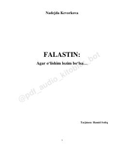

FFalastin xalqining kundalik hayoti, iztiroblari va kurashlari haqidagi ta'sirli reportajlar to'plami.
Ushbu kitob G'azo, Quddus va G'arbiy sohil falastinliklarining hayoti, ularning kundalik iztiroblari va kurashlari haqidagi reportajlar va qaydlardan iborat. Muallif falastinliklarning o'z taqdiri bilan yolg'iz qolgan holda qanday qilib qarshilik ko'rsatayotganini va insoniy qadr-qimmatini saqlab qolishga urinayotganini yoritib beradi.